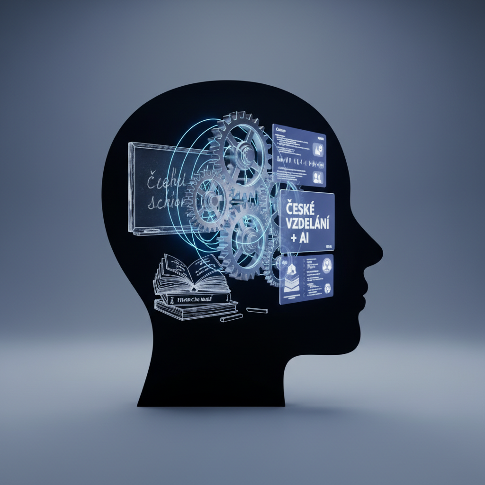
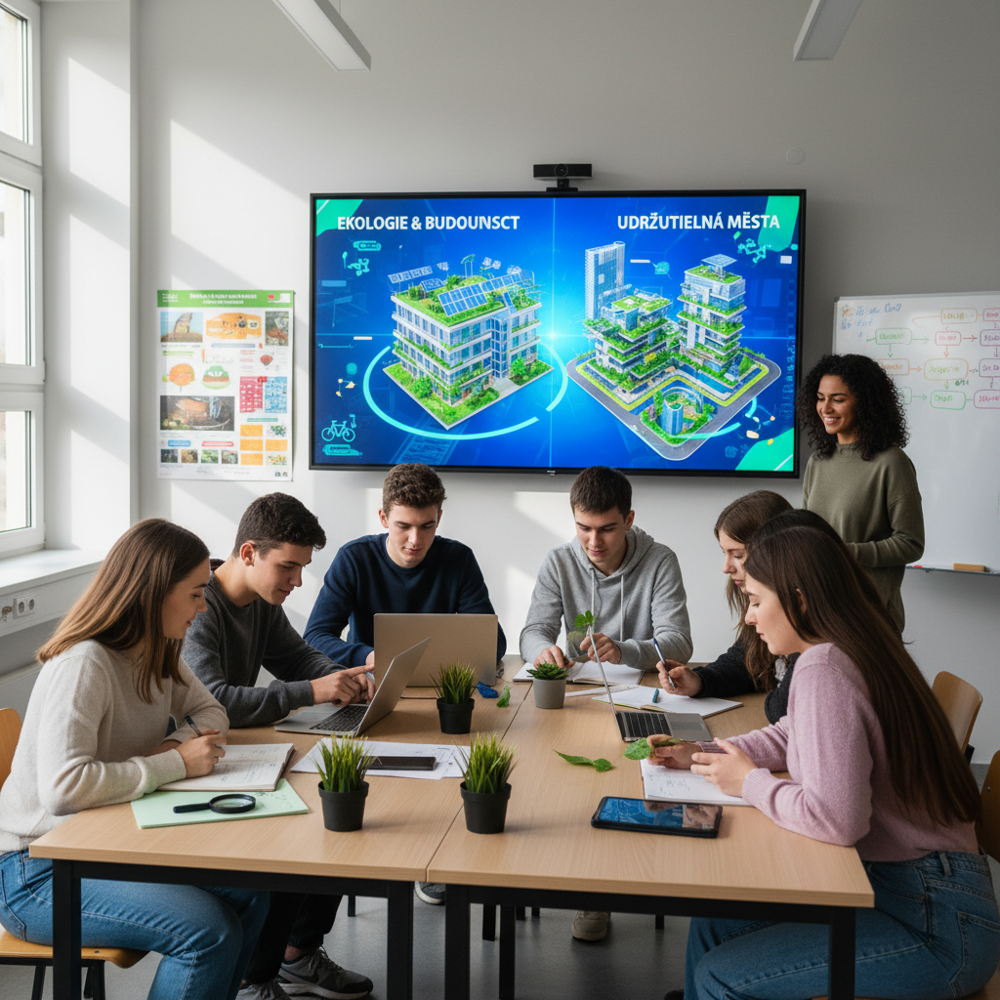

Jako dlouholetý učitel a metodik slyším od kolegů v kabinetech stále totéž: "Rád bych dělal projekty, ale ŠVP je neúprosné. Musím probrat látku, jinak žáci u přijímaček pohoří. A ta administrativa? To radši dopíšu třídnici."
Rozumím vám. Realita českého školství je sevřená mezi ambiciózní vize a tabulky. Ale co když vám řeknu, že projektová výuka není „něco navíc", co musíte do rozvrhu vklínit, ale cesta, jak „odučit" osnovy efektivněji a s menší únavou?
Mýtus vs. Realita: ŠVP není vězení
Mnoho učitelů vnímá Školní vzdělávací program (ŠVP) jako seznam stran v učebnici, které musí prolistovat. Ale RVP (Rámcový vzdělávací program) mluví o kompetencích a výstupech.
Realita: Žák má umět interpretovat data a chápat souvislosti v přírodě. Jak to uděláte, je na vás.
Projektová výuka vám umožní spojit izolované „ostrůvky vědomostí" do jednoho funkčního celku. Místo tří písemek v různých předmětech hodnotíte jeden komplexní výstup.
Příklad z praxe: Projekt „Ekologie naší školy"

Tento projekt ukazuje, jak během dvou týdnů (nebo jednoho projektového dne) naplnit výstupy hned tří předmětů najednou:
| Předmět | Co se reálně učí (dle ŠVP) | Role v projektu |
|---|---|---|
| Matematika | Sběr dat, aritmetický průměr, grafy | Žáci měří množství odpadu ve třídách a tvoří statistické přehledy. |
| Biologie | Ekosystém, udržitelný rozvoj, odpady | Studium rozkladu materiálů a vlivu školy na lokální biodiverzitu. |
| Čeština | Slohový útvar (zpráva), rétorika | Prezentace výsledků vedení školy a psaní článku do školního časopisu. |
Výsledek? Žáci nepočítají fiktivní jablka v učebnici, ale skutečné pytle plastu. To je motivace, kterou frontální výuka nikdy nenabídne.
AI jako váš metodický asistent: Konec byrokratické noční můry
Největší brzdou projektů je příprava materiálů. Tady nastupuje AI (např. Gemini nebo ChatGPT). Zapomeňte na hodiny strávené nad Wordem.
Jak vám AI pomůže během 5 minut?
-
📝 Tvorba pracovních listů
Zadejte AI: "Vytvoř pracovní list pro 8. třídu zaměřený na statistiku odpadu. Obsahuj tabulku pro sběr dat a 3 otázky na výpočet průměru."
-
🎯 Diferenciace
Máte ve třídě nadané žáky i žáky s IVP? AI upraví text stejného projektu do dvou úrovní náročnosti během vteřiny.
-
✅ Rubriky hodnocení
Požádejte AI o vytvoření hodnotící tabulky (rubriky) pro prezentaci. Budete mít jasná a objektivní kritéria pro klasifikaci, která obhájíte i před inspekcí.
Jak začít a nezbláznit se?
- Nechtějte revoluci: Začněte jedním malým projektem (třeba na 2 vyučovací hodiny).
- Spojte se s kolegou: Najděte si parťáka. Matematik a češtinář jsou ideální duo.
- Využijte AI pro „špinavou práci": Nechte stroje tvořit osnovy a kvízy, vy se věnujte žákům.
Projektová výuka v českém prostředí není o ignorování osnov, ale o jejich chytrém využívání. ŠVP je vaše hřiště, ne vaše klec. 🚀